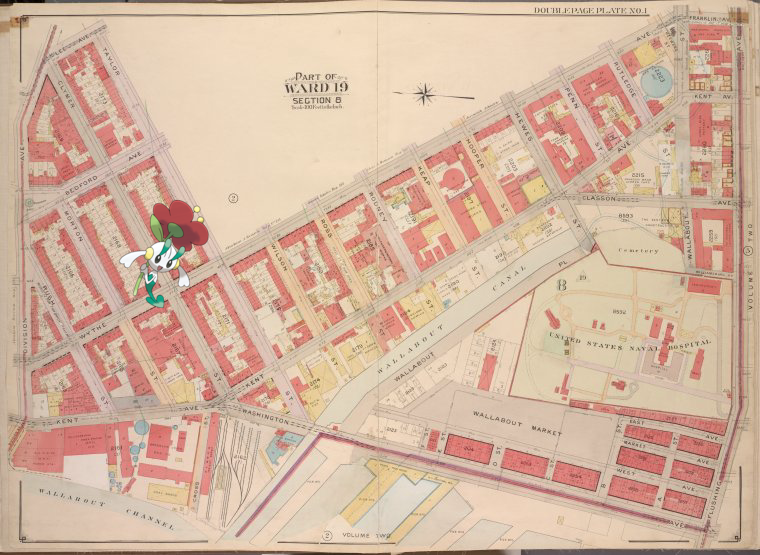
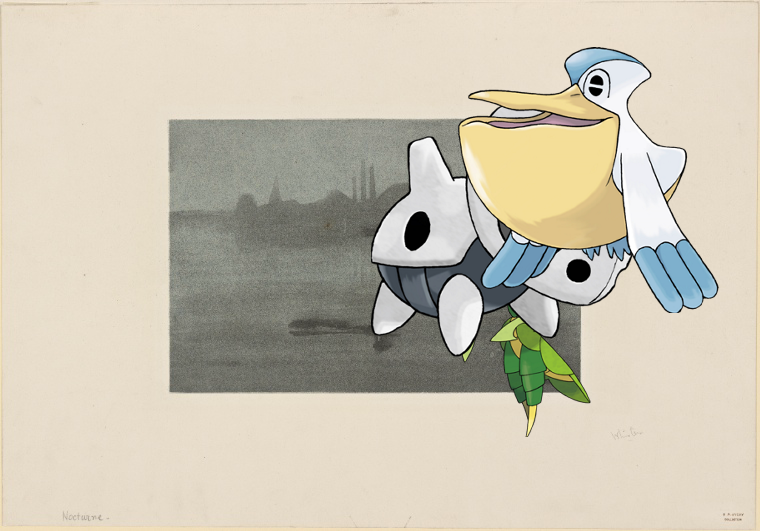
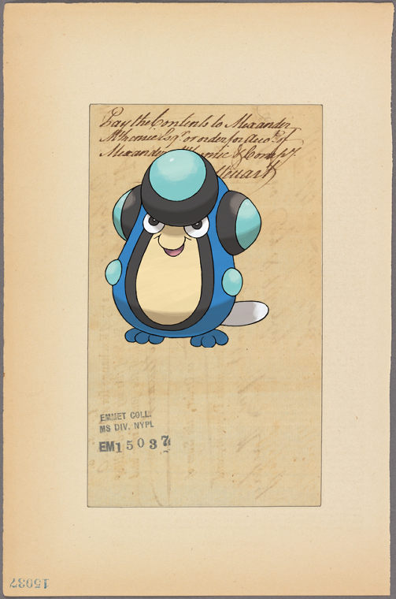

-
Gothorita ; TheWaldorf-Astoria
- 
-
Conkeldurr + [Un coin de ferme.]
-
Magcargo | Denmark, 1835 : Deenske burgerweer en beamten..
-
Leavanny, Aron, Pelipper ; Nocturne..
-
Poliwhirl – [S-S]
-
Palpitoad | EM. 15037.
-
![Sceptile on ANNUAL DINNER [held by] WEST SIDE REPUBLICAN CLUB [at]](media/finding-gmnWXPSb.png)
-
Chespin – Document
-
Furret – The robin and the rose!
-
Azumarill @ Document!
-
Duosion | America Septentrionalis.!
-
![Lanturn, Deino @ [S-S] http://digitalcollections.nypl.org/items/67377fd0-c6c3-012f-cad7-3c075448cc4b](media/finding-TdFJfBJN.png) Lanturn, Deino ; [S-S].
Lanturn, Deino ; [S-S]. -
 Delcatty | The New York Hospital!
Delcatty | The New York Hospital! -
Groudon | Map of the consolidated city of Brooklyn.!
-
 Chandelure ; Persépolis. Portique no. 1. Vue, côté du nord-ouest.
Chandelure ; Persépolis. Portique no. 1. Vue, côté du nord-ouest. -